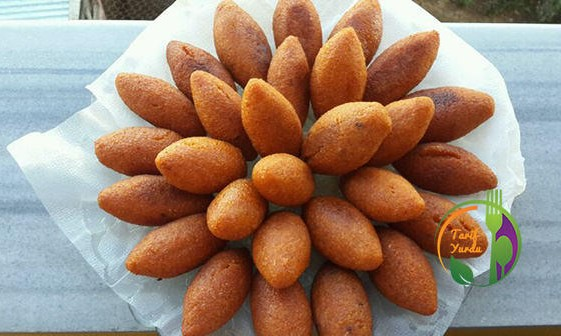

İçli Köfte
Malzemeler:
- 1 su bardağı pirinç
- 1 yumurta
- 1 su bardağı mısır irmiği ya da mısır unu
- 1 su bardağı glutensiz un
- Tuz, karabiber, pul biber
- Kızartmak için bol sıvı yağ
İç harcı için:
- 150 gr. kıyma
- 1 soğan
- 1 tatlı kaşığı salça (ev yapımı olabilir)
- Tuz ve karabiber
- İsteğe bağlı ceviz içi
- 2 yemek kaşığı sıvı yağ
1 su bardağı pirincin üzerine su ekleyip, iyice yumuşayana kadar haşlayın. Mısır ununu/ irmiğini ilave edip karıştırın. Yumurta, baharat ve tuzu ekleyin. Glutensiz unu da ekleyerek karışımı yoğurun. Hamuru 1 saat kadar dinlendirin.
Tarif:
Kıyma ve soğanı kavurun. Salça, baharat ve tuz ekleyip, kavurduktan sonra soğumaya alın. Dinlendirdiğiniz hamurdan limon büyüklüğünde parçalar alıp, içine kıymalı harçtan doldurun ve hamuru kapatın. Derin bir kızartma tenceresinde yağ kızdırın ve glutensiz içli köfteleri kızartın. Köftelerin her yönü altın rengine döndüğünde yağdan alıp, servis edebilirsiniz. Afiyet olsun!Not: Çapraz kontaminasyon/ bulaşma gluten bulaşığının, glutensiz bir ürüne yapışma riskidir. Üretim yapılan bantlardan gluten içeren besinler geçmişse, o bantta üretilen kabartma tozu, pirinç unu, mısır nişastası, mısır unu, kakao, pudra şekeri, vanilya, instant maya, salça, süt kreması, bitter çikolata vs. gibi pek çok ürüne gluten bulaşma ihtimali oluşur. Bu yüzden kullanacağınız ürünlerin açıklamasında “glutensiz” ibaresinin bulunmasına dikkat etmeniz önerilir.
Kaynak:
http://www.tarifyurdu.net/glutensiz-icli-kofte/